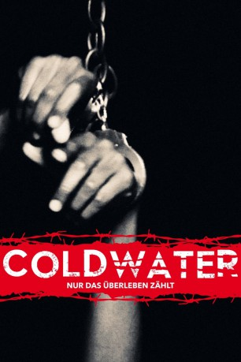

#9543 Coldwater - Nur das Überleben zählt
 
 IMDB-Wertung: 6.4 / 10
IMDB-Wertung: 6.4 / 10  Metascore: 0
Metascore: 0 
Der Jugendliche Brad Lunders bringt seine Mutter Doris zur Verzweiflung. Er hasst seinen Stiefvater, dealt mit Drogen und verwehrt sich jeder pädagogischen Maßnahme. Als Doris nicht mehr weiter weiß, entschließt sie sich, ihren Sohn in die abgelegene Korrekturanstalt "Cold Water" zu schicken, wo er Disziplin lernen und resozialisiert werden soll. Dort regiert der unbarmherzige Colonel Reichert, der die jugendlichen Straftäter unerbittlich für sich schuften lässt und jeglichen Ungehorsam drastisch bestraft. Für Brad wird das ungewohnt autoritäre Regime schnell unerträglich und er wagt heimlich einen Fluchtversuch - mit fatalen Konsequenzen. Es beginnt ein harter Überlebenskampf zwischen den Häftlingen, den Aufsehern und dem fanatischen Colonel.
Jahr: 2013
Dauer: 99 Minuten
FSK: 16
Land: USA Studio: Breaking Glass PicturesTonspuren: DTS - ,
Untertitel: Deutsch,
Auflösung: 1080p (1920x816) Größe: 4966 MB
Genre: Thriller, Drama
Regisseur: Vincent Grashaw
Drehbuch: Vincent Grashaw, Mark Penney
Soundtrack: Chris Chatham, Mark Miserocchi
Darsteller:
- P.J. Boudousqué als Brad Lunders
- James C. Burns als Colonel Frank Reichert
- Chris Petrovski als Gabriel Nunez
- Octavius J. Johnson als Jonas Williams
- Stephanie Simbari als Erin Rose
- Clayton LaDue als Trevor
- Tommy Nash als Powell
- Scott MacArthur als Gillis
- Zach Selwyn als Cross
- Raquel Gardner als Doris Lunders
 Douglas Bennett als Dr. William Jenson
Douglas Bennett als Dr. William Jenson- Josh Kelling als John
- Chauncey Leopardi als Eddie
- Jesse Saler als Jimmy
- Richard Shermer als Billy 'Gerb'
- Jammie Patton als Female AJRS Inspector
- Lesley Wolff als Detective Parker
- Charley Rossman als Detective Reed
- Jonathan Southard als Detective Jurgensen
- Brian Thomas Evans als Little Boy's Father
- Bailey Anne Borders als Holly
- Ryan Patrick McGuffey als Officer Murphy
- Martyn Hale als Shackled Inmate
- Melvin Gregg als Inmate
- Logan Hunt als Inmate
- Stephen Todt als Inmate
- David Saucedo als Auto Mechanic
 David Hill als Police Officer
David Hill als Police Officer- Nicholas Ashe Bateman als Josh Warrick
- Mackenzie Sidwell Graff als Casey
- Michael Rousselet als Counselor
- Brandon Bilotta als Counselor
- Joe Bilotta als Chief AJRS Inspector
- Erik Allen als Male AJRS Inspector
- Blake Logan als Deputy Morgan
- Logan Carroll als Little Boy
- Dave Grashaw als Older Sheriff
- Paul Dergarabedian als Police Officer #1
- David Piper als Police Officer #2
- Jalisco Wayne als Police Officer #3
- Dalton Kansas als Screaming Inmate
- Manuel Poma als Inmate
- Stefan Guy als Inmate
- Chris McCreary als Inmate
- Chris Menown als Inmate
- Brock Henderson als Inmate
- Jack London als Discharged Inmate
- Avery Alexander als Drunk Kid
- Ashley Grashaw als Reporter Tammy Withers
- Joel Hodge als Man Peeing
Datei: X:\2013(A-F)\Coldwater - Nur das Überleben zählt (2013, FSK16, 1920x816).mkv seit 07.09.2018
Festplatte: HD 2012(N-Z)-2013(A-H)
 Es gibt insgesamt 127 Filme in der Gruppe '2013(A-F)'
Es gibt insgesamt 127 Filme in der Gruppe '2013(A-F)'